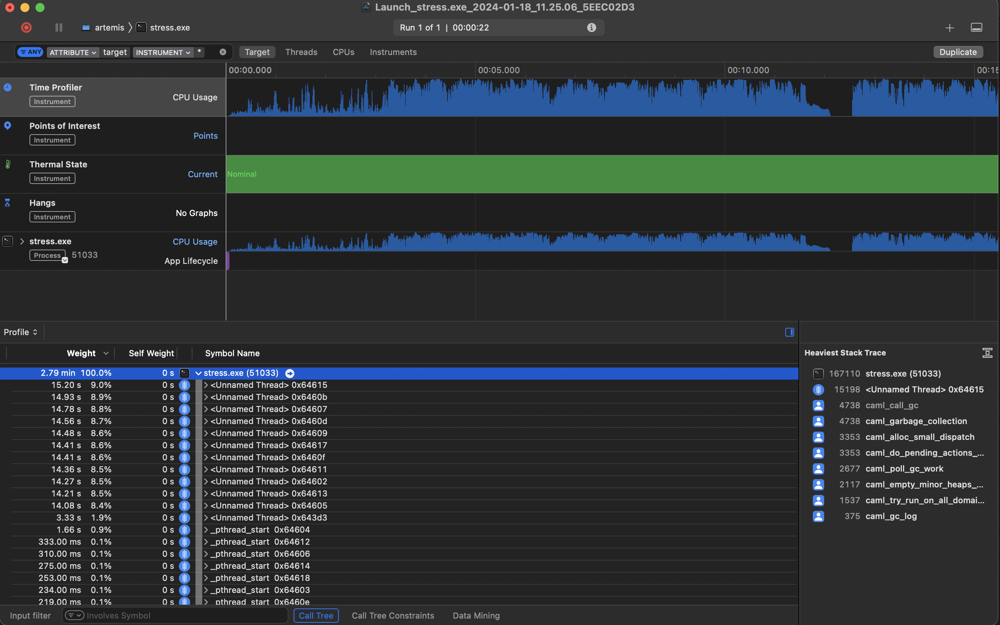

Preface
The premise of this collection of notes is to gather information about OCaml Debugging and Performance, and provide a single source of information about OCaml Performance and tooling, native OCaml debugging and related topics.
This work is inherently practical in nature, if you have a working knowledge of OCaml and systems performance tools then it should be possible to follow along.
Debugging support in the OCaml compiler
This document explains the state of debugging tools support in the OCaml compiler. It gives an overview of GDB, LLDB, WinDbg/CDB, as well as infrastructure around OCaml compiler to debug OCaml code.
The material contains both current support and ideas for future areas to improve.
Preliminaries
Debuggers
According to wikipedia 1
A debugger or debugging tool is a computer program used to test and debug other programs (the "target" program).
Writing a debugger from scratch for a language requries considerable work, especially if you want to support various platforms like Linux, MacOS, and Windows. Existing debuggers like GDB and LLDB can be extended to support debugging a language like OCaml. This is the path OCaml has chosen for what I'll call native debugging, debugging exectuables compiled to object code via assembly and run on a CPU. OCaml also includes a debugger for the bytecode exectuables it also produces, more on that later.
DWARF
According to the DWARF standard website:
DWARF is a debugging information file format used by many compilers and debuggers to support source level debugging. It addresses the requirements of a number of procedural languages, such as C, C++, and Fortran, and is designed to be extensible to other languages. DWARF is architecture independent and applicable to any processor or operating system. It is widely used on Unix, Linux and other operating systems, as well as in stand-alone environments.
DWARF allows a compiler to describe how program source translates to assembly, using a data structure called
Debugging Information Entry (DIE) which stores the information as "tags" to denote functions, variables etc.,
e.g., DW_TAG_variable, DW_TAG_pointer_type, DW_TAG_subprogram etc.
You can also invent your own tags and attributes.
DWARF reader is a program that consumes the DWARF format and creates debugger compatible output. This program may live in the compiler itself.
CodeView/PDB
PDB (Program Database) is a file format created by Microsoft that contains debug information. PDBs can be consumed by debuggers such as WinDbg/CDB and other tools to display debug information. A PDB contains multiple streams that describe debug information about a specific binary such as types, symbols, and source files used to compile the given binary. CodeView is another format which defines the structure of symbol records and type records that appear within PDB streams.
Compact Unwinding Format
Apple introduced a new kind of unwinding info the “compact unwinding format” on Apple platforms like macOS and iOS. The Clang compiler on those platforms emits this format along with DWARF CFI. The format is described by the implementation in clang/llvm, with an independent description provided at https://faultlore.com/blah/compact-unwinding/ and https://github.com/mstange/macho-unwind-info So to generate good backtraces on Apple platforms, you need to be able to parse and interpret compact unwinding tables. Further details of how Apple uses STABS plus DWARF for debug info https://wiki.dwarfstd.org/Apple%27s_%22Lazy%22_DWARF_Scheme.md.
Supported debuggers
GDB
OCaml supports GBD on Linux for all OCaml supported platforms, it supports basic debugging like setting breakpoints, stepping, backtraces etc. A sample GDB/Linux session is shown here. Additionally there are GDB macros gdb-macros and Python macros gdb_ocamlrun.py that provide low-level debugging of OCaml programs and of the OCaml runtime itself (both native and byte-code).
OCaml parser extensions
To be able to show debug output, we need an expression parser. GDB expression parsers are written in [Bison], and could be written to accept a subset of OCaml expressions, including printing OCaml values knowing the boxed types used by OCaml. Read the Memory Representation of Values chapter of RealWorld OCaml for more details.
Future work:
- Restore DWARF CFI for POWER native code
- Port more GDB macros to Python
- Add a source language to GDB https://sourceware.org/gdb/wiki/Internals%20Adding-a-Source-Language-to-GDB
LLDB
LLDB is the default debugger on MacOS, shipped with XCode and generally works the best on that platform. It is also available on Linux and is the default debugger for FreeBSD.
- LLDB has a plugin architecture but that does not work for language support.
- At present GDB generally works better on Linux.
OCaml parser extensions
This expression parser is written in C++. It is a type of Recursive Descent parser.
Some initial work on OCaml LLDB support at https://github.com/ocaml-flambda/llvm-project
What is included here?
RR
rr is a lightweight tool for recording, replaying and debugging execution of applications (trees of processes and threads). Debugging extends gdb with very efficient reverse-execution, which in combination with standard gdb/x86 features like hardware data watchpoints, makes debugging much more fun. OCaml supports RR on Linux for certain x86_64 and ARM64 platforms.
Future work:
- Validate RR on macOS/LLDB platform
- Validate RR on Linux/LLDB platform
- RR doesn't currently support Apple M3 chips see https://github.com/rr-debugger/rr/pull/3528
WinDbg/CDB
Microsoft provides Windows Debugging Tools such as the Windows Debugger (WinDbg) and the Console Debugger (CDB) which both support debugging programs that provide PDB information. These debuggers parse the debug info fpor a binary from the PDB, if available, to construct a visualization to serve up in the debugger. Currently the OCaml compiler does not produce PDB and future work is required to support debugging on Windows. Additionally OCaml on Windows provides three different ports, complicating the matter further.
DWARF and OCaml
DWARF is a widely-used format for representing debug information for consumption by debugging tools but also for runtime systems and profiling. DWARF information is typically embedded within an executable and provides a way to represent a variety of information:
- line information mapping instructions back to their location in the source
program. eg assembly instruction at address
xoriginated frommain.mlat line 13 - unwind information allowing call chains to be reconstructed from the
runtime state of the exectution stack. eg OCaml program is currently
running function
x, which was called fromyand so on. This is particularly interesting for multicore which introduced fibers and effects, and their runtime managed stack segments. - type information allowing debugging tools to reconstruct the structure
and identity of values from the runtime state of the program.
eg when an OCaml program is executing assembly instruction at address
xwhat is the OCaml value sitting in a register.
This information allows debuggers (eg gdb or lldb) and profiling tools to do what they do.
The OCaml compiler has included DWARF support for some time, with the large changes comming from OCaml 5 and the associated runtime changes the DWARF support needed to be restored and improved.
There are a number of potential user-cases for DWARF information:
- Use in native debugging tools like
gdbandlldb - Statisical profiling using tools like perf
- Computing call stacks for ThreadSanitizer, a data race detection tool
OCaml to DWARF DIE Mapping
Provide a small example of how OCaml gets mapped to DWARF DIEs
DW_TAG_base_type provide base type mappings that can be defined per language. Should OCaml be using this to output DWARF representations.
DW_TAG_variable describes a variable in the source language
https://dwarfstd.org/doc/Debugging%20using%20DWARF-2012.pdf
$
COMPILE_UNIT<header overall offset = 0x00000047>:
< 0><0x0000000b> DW_TAG_compile_unit
DW_AT_stmt_list 0x00000062
DW_AT_low_pc 0x0004b6a0
DW_AT_high_pc 0x0004b760
DW_AT_name fib.ml
DW_AT_comp_dir /home/tsmc/ocaml
DW_AT_producer GNU AS 2.41
DW_AT_language DW_LANG_Mips_Assembler
LOCAL_SYMBOLS:
< 1><0x0000002e> DW_TAG_subprogram
DW_AT_name camlFib__main_1_3_code
DW_AT_external yes(1)
DW_AT_type <0x00000073>
DW_AT_low_pc 0x0004b6f8
DW_AT_high_pc 0x0004b73c
< 1><0x00000045> DW_TAG_subprogram
DW_AT_name camlFib__fib_0_2_code
DW_AT_external yes(1)
DW_AT_type <0x00000073>
DW_AT_low_pc 0x0004b6a0
DW_AT_high_pc 0x0004b6f4
< 1><0x0000005c> DW_TAG_subprogram
DW_AT_name camlFib__entry
DW_AT_external yes(1)
DW_AT_type <0x00000073>
DW_AT_low_pc 0x0004b740
DW_AT_high_pc 0x0004b760
< 1><0x00000073> DW_TAG_unspecified_type
OCaml Name Mangling
What is missing?
Resources
Tom Tromey discusses debugging support in rustc, provides a good overview of the area and what OCaml might also want to do - https://www.youtube.com/watch?v=elBxMRSNYr4
https://rustc-dev-guide.rust-lang.org/debugging-support-in-rustc.html
DWARF support in GHC (4 part series) https://well-typed.com/blog/2020/04/dwarf-1/
Sample GDB on Linux debugging session
Starting from an OCaml 4.14 switch, create one if it doesn't already exist with opam switch create 4.14.1 --no-install.
$ opam switch
# switch compiler description
4.14.1 ocaml-base-compiler.4.14.1 4.14.1
Consider this program:
$ cat fib.ml
let rec fib n =
if n < 2 then 1
else fib (n-1) + fib (n-2)
let main () =
let r = fib 20 in
Printf.printf "fib(20) = %d" r
let _ = main ()
compiled with
$ ocamlopt -g -o fib.exe fib.ml
Here the OCaml from our fib program gets name mangled into the following:
$ nm -pa fib.exe|grep "camlFib"
000000010005da58 D _camlFib
000000010005daf0 D _camlFib__1
000000010005dac8 D _camlFib__2
000000010005dab0 D _camlFib__3
000000010005da98 D _camlFib__4
000000010005da80 D _camlFib__5
000000010005da40 D _camlFib__6
000000010005da28 D _camlFib__7
0000000100003838 T _camlFib__code_begin
0000000100003928 T _camlFib__code_end
000000010005da20 D _camlFib__data_begin
000000010005db08 D _camlFib__data_end
00000001000038e8 T _camlFib__entry
0000000100003838 T _camlFib__fib_267
000000010005db10 D _camlFib__frametable
000000010005da68 D _camlFib__gc_roots
0000000100003890 T _camlFib__main_269
OCaml functions are mangled as caml<MODULENAME>__<FUNCTIONNAME>_<RANDOMINT>. The numbers used can be recovered from the lambda format. Re-running the command with -dlambda will output the lamdba form, and -S will output the assembly for the program as fib.S. You can see the symbol _camlFib__main_269 is coming from the main/269 seen in the lambda format.
$ ocamlopt -dlambda -g -S -o fib.exe fib.ml
(seq
(letrec
(fib/267
(function n/268[int] : int
(if (< n/268 2) 1
(+ (apply fib/267 (- n/268 1)) (apply fib/267 (- n/268 2))))))
(setfield_ptr(root-init) 0 (global Fib!) fib/267))
(let
(main/269 =
(function param/308[int] : int
(let (r/271 =[int] (apply (field 0 (global Fib!)) 20))
(apply (field 1 (global Stdlib__Printf!))
[0: [11: "fib(20) = " [4: 0 0 0 0]] "fib(20) = %d"] r/271))))
(setfield_ptr(root-init) 1 (global Fib!) main/269))
(apply (field 1 (global Fib!)) 0) 0 0)
$ gdb fib.exe
GNU gdb (Ubuntu 14.0.50.20230907-0ubuntu1) 14.0.50.20230907-git
Copyright (C) 2023 Free Software Foundation, Inc.
License GPLv3+: GNU GPL version 3 or later <http://gnu.org/licenses/gpl.html>
This is free software: you are free to change and redistribute it.
There is NO WARRANTY, to the extent permitted by law.
Type "show copying" and "show warranty" for details.
This GDB was configured as "aarch64-linux-gnu".
Type "show configuration" for configuration details.
For bug reporting instructions, please see:
<https://www.gnu.org/software/gdb/bugs/>.
Find the GDB manual and other documentation resources online at:
<http://www.gnu.org/software/gdb/documentation/>.
For help, type "help".
Type "apropos word" to search for commands related to "word"...
Reading symbols from fib.exe...
(gdb) break camlFib__fib_267
Breakpoint 1 at 0x4f9b8: file fib.ml, line 1.
(gdb) r
Starting program: /home/tsmc/ocaml/fib-4.14.1.exe
[Thread debugging using libthread_db enabled]
Using host libthread_db library "/lib/aarch64-linux-gnu/libthread_db.so.1".
Breakpoint 1, camlFib__fib_267 () at fib.ml:1
1 let rec fib n =
(gdb) bt
#0 camlFib__fib_267 () at fib.ml:1
#1 0x0000aaaaaaaefa2c in camlFib__main_269 () at fib.ml:6
#2 0x0000aaaaaaaefa98 in camlFib__entry () at fib.ml:9
#3 0x0000aaaaaaaec0a4 in caml_program ()
#4 0x0000aaaaaab337d4 in caml_start_program ()
#5 0x0000aaaaaab34090 in caml_startup_common (argv=0xaaaaaab709c8,
pooling=<optimized out>, pooling@entry=0) at startup_nat.c:160
#6 0x0000aaaaaab34110 in caml_startup_exn (argv=<optimized out>)
at startup_nat.c:167
#7 caml_startup (argv=<optimized out>) at startup_nat.c:172
#8 caml_main (argv=<optimized out>) at startup_nat.c:179
#9 0x0000aaaaaaaebdd0 in main (argc=<optimized out>, argv=<optimized out>)
at main.c:37
(gdb)
Observe that I have the full backtrace all the way from the main function in the runtime.
You can keep continuing and the backtrace continues to build up, showing the recursive calls to fib.
(gdb) c
Continuing.
Breakpoint 1, camlFib__fib_267 () at fib.ml:1
1 let rec fib n =
(gdb) bt
#0 camlFib__fib_267 () at fib.ml:1
#1 0x0000aaaaaaaef9e4 in camlFib__fib_267 () at fib.ml:3
#2 0x0000aaaaaaaefa2c in camlFib__main_269 () at fib.ml:6
#3 0x0000aaaaaaaefa98 in camlFib__entry () at fib.ml:9
#4 0x0000aaaaaaaec0a4 in caml_program ()
#5 0x0000aaaaaab337d4 in caml_start_program ()
#6 0x0000aaaaaab34090 in caml_startup_common (argv=0xaaaaaab709c8, pooling=<optimized out>, pooling@entry=0)
at startup_nat.c:160
#7 0x0000aaaaaab34110 in caml_startup_exn (argv=<optimized out>) at startup_nat.c:167
#8 caml_startup (argv=<optimized out>) at startup_nat.c:172
#9 caml_main (argv=<optimized out>) at startup_nat.c:179
#10 0x0000aaaaaaaebdd0 in main (argc=<optimized out>, argv=<optimized out>) at main.c:37
(gdb) c
Continuing.
Breakpoint 1, camlFib__fib_267 () at fib.ml:1
1 let rec fib n =
(gdb) bt
#0 camlFib__fib_267 () at fib.ml:1
#1 0x0000aaaaaaaef9e4 in camlFib__fib_267 () at fib.ml:3
#2 0x0000aaaaaaaef9e4 in camlFib__fib_267 () at fib.ml:3
#3 0x0000aaaaaaaefa2c in camlFib__main_269 () at fib.ml:6
#4 0x0000aaaaaaaefa98 in camlFib__entry () at fib.ml:9
#5 0x0000aaaaaaaec0a4 in caml_program ()
#6 0x0000aaaaaab337d4 in caml_start_program ()
#7 0x0000aaaaaab34090 in caml_startup_common (argv=0xaaaaaab709c8, pooling=<optimized out>, pooling@entry=0)
at startup_nat.c:160
#8 0x0000aaaaaab34110 in caml_startup_exn (argv=<optimized out>) at startup_nat.c:167
#9 caml_startup (argv=<optimized out>) at startup_nat.c:172
#10 caml_main (argv=<optimized out>) at startup_nat.c:179
#11 0x0000aaaaaaaebdd0 in main (argc=<optimized out>, argv=<optimized out>) at main.c:37
(gdb)
Here we are on Linux / ARM64, so while the values cannot be printed directly, I know that the arguments are sent in registers, for ARM64 the first 4 arguments are passed in registers x0-x3. I can examine the value at entry to the function like so:
(gdb) p $x0 >> 1
$1 = 16
(gdb)
right shifting by 1 due to OCaml value representation, which uses 31 bits for integer values.
(gdb) c
Continuing.
Breakpoint 1, camlFib__fib_267 () at fib.ml:1
(gdb) p $x0 >> 1
$3 = 14
You can also set break points based on the line numbers in gbd.
(gdb) list
1 let rec fib n =
2 if n < 2 then 1
3 else fib (n-1) + fib (n-2)
4
5 let main () =
6 let r = fib 20 in
7 Printf.printf "fib(20) = %d" r
8
9 let _ = main ()
(gdb) break fib.ml:6
Breakpoint 2 at 0xaaaaaaaefa28: file fib.ml, line 6.
From this point you can run the entire OCaml program, setting breakpoints and interacting with it as you would a regular C/C++ program.
Sample LLDB on MacOS session
Starting from an OCaml 4.14 switch, create one if it doesn't already exist with opam switch create 4.14.1 --no-install.
$ opam switch
# switch compiler description
4.14.1 ocaml-base-compiler.4.14.1 4.14.1
Consider this program:
$ cat fib.ml
let rec fib n =
if n < 2 then 1
else fib (n-1) + fib (n-2)
let main () =
let r = fib 20 in
Printf.printf "fib(20) = %d" r
let _ = main ()
compiled with
$ ocamlopt -g -o fib-4.14.1.exe fib.ml
Here the OCaml from our fib program gets name mangled into the following:
$ nm -pa fib-4.14.1.exe|grep "camlFib"
000000010005da58 D _camlFib
000000010005daf0 D _camlFib__1
000000010005dac8 D _camlFib__2
000000010005dab0 D _camlFib__3
000000010005da98 D _camlFib__4
000000010005da80 D _camlFib__5
000000010005da40 D _camlFib__6
000000010005da28 D _camlFib__7
0000000100003838 T _camlFib__code_begin
0000000100003928 T _camlFib__code_end
000000010005da20 D _camlFib__data_begin
000000010005db08 D _camlFib__data_end
00000001000038e8 T _camlFib__entry
0000000100003838 T _camlFib__fib_267
000000010005db10 D _camlFib__frametable
000000010005da68 D _camlFib__gc_roots
0000000100003890 T _camlFib__main_269
OCaml functions are mangled as caml<MODULENAME>__<FUNCTIONNAME>_<RANDOMINT>. The numbers used can be recovered from the lambda format. Re-running the command with -dlambda will output the lamdba form, and -S will output the assembly for the program as fib.S. You can see the symbol _camlFib__main_269 is coming from the main/269 seen in the lambda format.
$ ocamlopt -dlambda -g -S -o fib-4.14.1.exe fib.ml
(seq
(letrec
(fib/267
(function n/268[int] : int
(if (< n/268 2) 1
(+ (apply fib/267 (- n/268 1)) (apply fib/267 (- n/268 2))))))
(setfield_ptr(root-init) 0 (global Fib!) fib/267))
(let
(main/269 =
(function param/308[int] : int
(let (r/271 =[int] (apply (field 0 (global Fib!)) 20))
(apply (field 1 (global Stdlib__Printf!))
[0: [11: "fib(20) = " [4: 0 0 0 0]] "fib(20) = %d"] r/271))))
(setfield_ptr(root-init) 1 (global Fib!) main/269))
(apply (field 1 (global Fib!)) 0) 0 0)
$ lldb fib-4.14.1.exe
(lldb) target create "fib-4.14.1.exe"
Current executable set to '/Users/tsmc/projects/ocaml/fib-4.14.1.exe' (arm64).
(lldb) br s -n camlFib__fib_267
Breakpoint 1: where = fib-4.14.1.exe`camlFib__code_begin, address = 0x0000000100003838
(lldb) r
Process 63927 launched: '/Users/tsmc/projects/ocaml/fib-4.14.1.exe' (arm64)
Process 63927 stopped
* thread #1, queue = 'com.apple.main-thread', stop reason = breakpoint 1.1
frame #0: 0x0000000100003838 fib-4.14.1.exe`camlFib__code_begin
fib-4.14.1.exe`camlFib__code_begin:
-> 0x100003838 <+0>: sub sp, sp, #0x20
0x10000383c <+4>: str x30, [sp, #0x18]
0x100003840 <+8>: cmp x0, #0x5
0x100003844 <+12>: b.ge 0x100003858 ; <+32>
Target 0: (fib-4.14.1.exe) stopped.
(lldb) bt
* thread #1, queue = 'com.apple.main-thread', stop reason = breakpoint 1.1
* frame #0: 0x0000000100003838 fib-4.14.1.exe`camlFib__code_begin
frame #1: 0x00000001000038ac fib-4.14.1.exe`camlFib__code_begin + 116
frame #2: 0x0000000100029c44 fib-4.14.1.exe`caml_startup_common(argv=<unavailable>, pooling=<unavailable>) at startup_nat.c:160:9 [opt]
frame #3: 0x0000000100029cb8 fib-4.14.1.exe`caml_main [inlined] caml_startup_exn(argv=<unavailable>) at startup_nat.c:167:10 [opt]
frame #4: 0x0000000100029cb0 fib-4.14.1.exe`caml_main [inlined] caml_startup(argv=<unavailable>) at startup_nat.c:172:15 [opt]
frame #5: 0x0000000100029cb0 fib-4.14.1.exe`caml_main(argv=<unavailable>) at startup_nat.c:179:3 [opt]
frame #6: 0x0000000100029d18 fib-4.14.1.exe`main(argc=<unavailable>, argv=<unavailable>) at main.c:37:3 [opt]
frame #7: 0x000000018863d0e0 dyld`start + 2360
Observe that I have the full backtrace all the way from the main function in the runtime.
You can keep continuing and the backtrace continues to build up, showing the recursive calls to fib.
(lldb) bt
* thread #1, queue = 'com.apple.main-thread', stop reason = breakpoint 1.1
* frame #0: 0x0000000100003838 fib-4.14.1.exe`camlFib__code_begin
frame #1: 0x0000000100003864 fib-4.14.1.exe`camlFib__code_begin + 44
frame #2: 0x00000001000038ac fib-4.14.1.exe`camlFib__code_begin + 116
frame #3: 0x0000000100029c44 fib-4.14.1.exe`caml_startup_common(argv=<unavailable>, pooling=<unavailable>) at startup_nat.c:160:9 [opt]
frame #4: 0x0000000100029cb8 fib-4.14.1.exe`caml_main [inlined] caml_startup_exn(argv=<unavailable>) at startup_nat.c:167:10 [opt]
frame #5: 0x0000000100029cb0 fib-4.14.1.exe`caml_main [inlined] caml_startup(argv=<unavailable>) at startup_nat.c:172:15 [opt]
frame #6: 0x0000000100029cb0 fib-4.14.1.exe`caml_main(argv=<unavailable>) at startup_nat.c:179:3 [opt]
frame #7: 0x0000000100029d18 fib-4.14.1.exe`main(argc=<unavailable>, argv=<unavailable>) at main.c:37:3 [opt]
frame #8: 0x000000018863d0e0 dyld`start + 2360
(lldb) c
Process 63927 resuming
Process 63927 stopped
* thread #1, queue = 'com.apple.main-thread', stop reason = breakpoint 1.1
frame #0: 0x0000000100003838 fib-4.14.1.exe`camlFib__code_begin
fib-4.14.1.exe`camlFib__code_begin:
-> 0x100003838 <+0>: sub sp, sp, #0x20
0x10000383c <+4>: str x30, [sp, #0x18]
0x100003840 <+8>: cmp x0, #0x5
0x100003844 <+12>: b.ge 0x100003858 ; <+32>
Target 0: (fib-4.14.1.exe) stopped.
(lldb) bt
* thread #1, queue = 'com.apple.main-thread', stop reason = breakpoint 1.1
* frame #0: 0x0000000100003838 fib-4.14.1.exe`camlFib__code_begin
frame #1: 0x0000000100003864 fib-4.14.1.exe`camlFib__code_begin + 44
frame #2: 0x0000000100003864 fib-4.14.1.exe`camlFib__code_begin + 44
frame #3: 0x00000001000038ac fib-4.14.1.exe`camlFib__code_begin + 116
frame #4: 0x0000000100029c44 fib-4.14.1.exe`caml_startup_common(argv=<unavailable>, pooling=<unavailable>) at startup_nat.c:160:9 [opt]
frame #5: 0x0000000100029cb8 fib-4.14.1.exe`caml_main [inlined] caml_startup_exn(argv=<unavailable>) at startup_nat.c:167:10 [opt]
frame #6: 0x0000000100029cb0 fib-4.14.1.exe`caml_main [inlined] caml_startup(argv=<unavailable>) at startup_nat.c:172:15 [opt]
frame #7: 0x0000000100029cb0 fib-4.14.1.exe`caml_main(argv=<unavailable>) at startup_nat.c:179:3 [opt]
frame #8: 0x0000000100029d18 fib-4.14.1.exe`main(argc=<unavailable>, argv=<unavailable>) at main.c:37:3 [opt]
frame #9: 0x000000018863d0e0 dyld`start + 2360
(lldb)
Here we are on MacOS / ARM64, so while the values cannot be printed directly, I know that the arguments are sent in registers, for ARM64 the first 4 arguments are passed in registers x0-x3. I can examine the value at entry to the function like so:
(lldb) p $x0 >> 1
(unsigned long) 16
(lldb)
right shifting by 1 due to OCaml value representation, which uses 31 bits for integer values.
(lldb) c
Process 63927 resuming
Process 63927 stopped
* thread #1, queue = 'com.apple.main-thread', stop reason = breakpoint 1.1
frame #0: 0x0000000100003838 fib-4.14.1.exe`camlFib__code_begin
fib-4.14.1.exe`camlFib__code_begin:
-> 0x100003838 <+0>: sub sp, sp, #0x20
0x10000383c <+4>: str x30, [sp, #0x18]
0x100003840 <+8>: cmp x0, #0x5
0x100003844 <+12>: b.ge 0x100003858 ; <+32>
Target 0: (fib-4.14.1.exe) stopped.
(lldb) p $x0 >> 1
(unsigned long) 14
From this point you can run the entire OCaml program, setting breakpoints and interacting with it as you would a regular C/C++ program.
Issues
- Setting breakpoints using line numbers eg
br s -f fib.ml -l 6does not work in 4.14 or 5.* - Setting breakpoints using symbols eg
br s -n camlFib__fib_267is broken in OCaml 5.1 onwards. OCaml 5.1 changed name mangling to use.separators over__which breaks lldb on MacOS. Linux LLDB is unaffected. - Backtraces in 4.14 onwards show offset
camlFib__code_begin + 116rather than line number in source code - Backtraces in 5.0 onwards missing C code for OCaml runtime setup, beginning at
camlFib__code_begin
Debugging OCaml bytecode
Preliminaries
Debuggers
OCaml includes a compiler that produces bytecode and an interpreter for that bytecode. There are two supported options for debugging bytecode.
- ocamldebug - provided with the compiler distribution
- ocamlearlybird - VSCode integrated debugger using DAP
Both options reuse the protocol from ocamldebug to interface with the bytecode executables.
DAP
The Debug Adapter Protocol (DAP) defines the abstract protocol used between a development tool (e.g. IDE or editor) and a debugger. The idea behind the Debug Adapter Protocol (DAP) is to abstract the way how the debugging support of development tools communicates with debuggers or runtimes into a protocol. By using DAP OCaml debugging can be integrated with many different IDEs or editors. See https://microsoft.github.io/debug-adapter-protocol/.
What is missing?
- ocamldebug support for DAP
- No support for MinGW or MSVC Windows ports
- DAP integration for Vim / Emacs - status unknown
- Limited support for Domains in bytecode debug - single domain only
- support for effects - status unknown
Profiling
This is an attempt to map the software profiling ecosystem, with a focus on the OCaml programming language. A review / survey of profilers, their data formats, analysis UIs and converters between data formats.
Profilers
There are a number of different profilers available for OCaml, each with their strengths and usecases.
| Profiler | Purpose | Profile Data Format | Link |
|---|---|---|---|
| olly | observability tools around the runtime events tracing system introduced in OCaml 5.0 | Chrome Tracing Format (JSON), Fuchsia Trace Format | runtime-events-tool |
| magic-trace | collects and displays high-resolution traces of what a process is doing | Fuchsia Trace Format | magic-trace |
| memtrace | Statistical Memory Profiling for OCaml aka statmemprof | Common Trace Format (CTF) | memtrace |
| eio-trace | eio-trace can be used to record and display traces of programs using the eio library | Fuchsia Trace Format | eio-trace |
| perf | General-purpose profiler that uses hardware performance counters on Linux | Common Trace Format (CTF) | |
| Instruments | General-purpose profiler that comes with Xcode on macOS | ||
| dtrace | General Performance analysis tool for FreeBSD, Solaris and MacOS | dtrace | |
| eBPF | General Performance analysis tool for Linux (similar to DTrace) |
The intent is to have a minimal set of Profile Data Formats produced by OCaml tooling that can be used with existing Analysis UI tools.
Visualisation and Analysis UI
| Name | Description | Profile Data Format | Link |
|---|---|---|---|
| Perfetto | System profiling, app tracing and trace analysis | Fuchsia Trace Format (others) | perfetto.dev |
| Speedscope | An interactive flamegraph visualizer | Various | github.com/jlfwong/speedscope |
| memtrace_viewer | Statistical Memory Profiler | CTF | github.com/janestreet/memtrace_viewer |
| flamegraph | Stack trace visualiser | Folded Stacks | www.brendangregg.com/flamegraphs.html |
| flamescope | Visualization tool for exploring different time ranges as Flame Graphs | Linux perf script | github.com/Netflix/flamescope |
| pprof | Visualise profiling data as directed graph or flamegraphs | Protocol Buffers | github.com/google/pprof |
Profile Data Format
Chrome Tracing Format is a textual JSON also know as Trace Event Format or Chrome Performance Profile. spec No OCaml libraries for reading / writing
Fuchsia Trace Format is a binary format used to collect, store, and transmit trace records. Focuses on performance. spec Two libraries for reading / writing trace-fuchsia and tracing.
Common Trace Format is a binary trace format designed to be very fast to write. Uses a declaritive language called the Trace Stream Description Language TSDL to describe trace stream layout. spec No OCaml libraries for reading / writing
Converters
Nothing to see here!
Walk throughs
- Generating CPU Flamegraphs for OCaml on Linux here
- Generating CPU Flamegraphs for OCaml on MacOS here
- Memory profiling with statmemprof in 4.14 LTS and 5.3
Resources
This format was inspired by https://profilerpedia.markhansen.co.nz
Prior art:
- OCaml-bench profiling notes https://github.com/ocaml-bench/notes/blob/master/profiling_notes.md
Profiling OCaml with perf
-
perf support for DWARF vs FP vs LBR
-
Importance of DWARF for performance tools like perf
Take content from ocaml/ocaml#12563, ocaml/ocaml#11144 and ocaml/ocaml#11031
LBR descriptions https://lwn.net/Articles/680985/ and https://lwn.net/Articles/680996/.
Generating OCaml flamegraphs on Linux
Generating OCaml flamegraphs on MacOS
Flame Graphs are a visualisation for sampled stack frames. They provide a great way to visualise stack traces of profiled software to identify the most frequent code-paths and optimise them. Popularised by Brendan Gregg loads more information can be found on his blog https://www.brendangregg.com/flamegraphs.html
Here we are interested in how we can generate Flame Graphs for OCaml programs on macOS. macOS is what I use for development work and I could not find other documentation on how to do this. So here we are.
Getting Started
First we need XCode and Instruments installed, get them via the App Store by searching for XCode and installing that. Instruments.app is Apple's profiling tool for capturing and visualising traces, along with many other interesting things. It is built on top of the DTrace tracing framework from OpenSolaris, which was ported to Mac OS X v10.5 and is available in all following versions of macOS. Dtrace is very cool and deserves its own post on how to use it effectively on OCaml programs.
After XCode is installed confirm that Instruments is also installed, this command will find the xctrace executable:
$ xcrun --find xctrace
/Applications/Xcode.app/Contents/Developer/usr/bin/xctrace
xctrace is a command line version of Instruments which allows capturing traces from a terminal. To run a Time Profiler against an OCaml process use the following command, substituing PROGRAM with the OCaml executable. Often found under _build/default directory of a Dune project. For my project the executable is called./_build/default/stress/stress.exe
$ xctrace record --output . --template "Time Profiler" \
--target-stdout - --launch -- PROGRAM
This will create a trace file ending in .trace, open that trace file in Instruments, select the Time Profiler and select a Stack Thread in the lower left pane. Choose Select Edit > Deep Copy from the menu and paste the output into a file called ocaml-program.trace. On MacOS Sonoma using Instruments 15.2 it looks like:

Next download the Perl file https://github.com/brendangregg/FlameGraph/blob/master/stackcollapse-instruments.pl
to reduce the trace into a format that Flame Graphs can understand. You will need to make it executable with chmod +x stackcollapse-instruments.pl
./stackcollapse-instruments.pl ocaml-program.trace > ocaml-program.outfile
Then download the Flame Graph tool https://github.com/brendangregg/FlameGraph/blob/master/flamegraph.pl and
run that against the outfile created by stackcollapse-instruments. Again make it executable with chmod +x
./flamegraph.pl ocaml-program.outfile > ocaml-program.svg
This will produce an application level Flame Graph of the traced application stored in ocaml-program.svg.
Open that up in a Browser and click around to see where your OCaml program is spending it's time.
Another visualisation option is https://www.speedscope.app which can take the .trace file and produce a Flame Graph, without needing to run any scripts locally.
In Practice: Flame Graph for solver-service
Recently I have been looking at the performance of the solver-service which is used to perform opam solves for the OCaml Continuous Integration services run by Tarides. The code uses OCaml 5 with EIO and is expected to scale across multiple CPUs.
I used this xctrace command to run the stress test, setting some Garbage Collection parameters:
$ xctrace record --template "Time Profiler" \
--env=OCAMLRUNPARAM="M=352" --target-stdout \
- --launch -- ./_build/default/stress/stress.exe local \
--cache-dir=./cache --count=10
...
Solved warm-up requests in: 12.37s
Running another 10 solves...
10/10 complete
Solved 10 requests in 10.06s (1.01s/iter) (15.91 solves/s)
Target app exited, ending recording...
Recording completed. Saving output file...
Output file saved as: Launch_stress.exe_2024-01-18_11.45.55_042428AC.trace
$ open Launch_stress.exe_2024-01-18_11.45.55_042428AC.trace
# Export data into a file called `macos-solver-02.trace`
$ ./stackcollapse-instruments.pl macos-solver-02.trace > macos-solver-02.outfile
$ ./flamegraph.pl macos-solver-02.outfile > macos-solver-02.svg
Producing this Flame Graph for the service. Note this was running on a 12 core M3Pro MacBookPro hence the 12 peaks relating to OCaml 5 using all available cores in this machine.

Next step is working out where time is being spend and where we can speed up things.